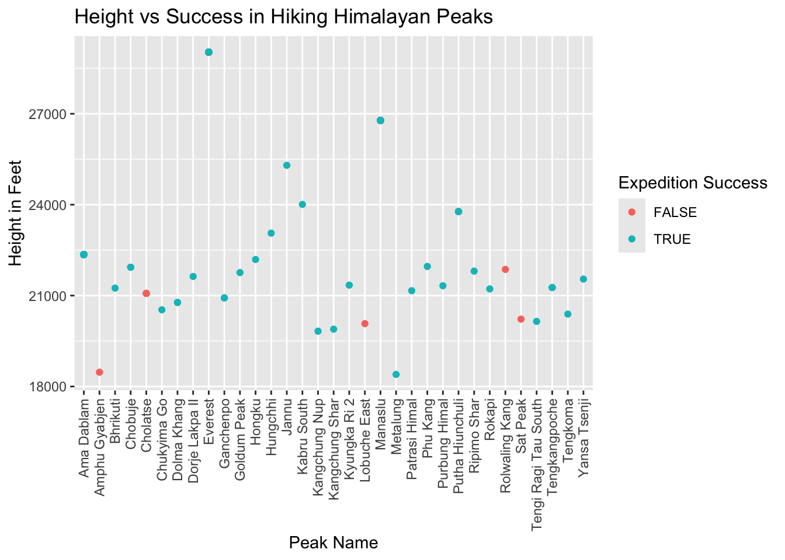

[1] 42025-01-21
The echo: false option disables the printing of code (only output is displayed).
library(tidyverse)── Attaching core tidyverse packages ──────────────────────── tidyverse 2.0.0 ──
✔ dplyr 1.1.4 ✔ readr 2.1.5
✔ forcats 1.0.0 ✔ stringr 1.5.1
✔ ggplot2 3.5.1 ✔ tibble 3.2.1
✔ lubridate 1.9.4 ✔ tidyr 1.3.1
✔ purrr 1.0.2
── Conflicts ────────────────────────────────────────── tidyverse_conflicts() ──
✖ dplyr::filter() masks stats::filter()
✖ dplyr::lag() masks stats::lag()
ℹ Use the conflicted package (<http://conflicted.r-lib.org/>) to force all conflicts to become errorslibrary(ggplot2)
library(dplyr)
library(viridis)Loading required package: viridisLiteexped_tidy <- readr::read_csv('https://raw.githubusercontent.com/rfordatascience/tidytuesday/main/data/2025/2025-01-21/exped_tidy.csv')Rows: 882 Columns: 69
── Column specification ────────────────────────────────────────────────────────
Delimiter: ","
chr (22): EXPID, PEAKID, SEASON_FACTOR, HOST_FACTOR, ROUTE1, ROUTE2, NATION...
dbl (17): YEAR, SEASON, HOST, SMTDAYS, TOTDAYS, TERMREASON, HIGHPOINT, CAMP...
lgl (27): ROUTE3, ROUTE4, SUCCESS1, SUCCESS2, SUCCESS3, SUCCESS4, ASCENT3, ...
date (3): BCDATE, SMTDATE, TERMDATE
ℹ Use `spec()` to retrieve the full column specification for this data.
ℹ Specify the column types or set `show_col_types = FALSE` to quiet this message.peaks_tidy <- readr::read_csv('https://raw.githubusercontent.com/rfordatascience/tidytuesday/main/data/2025/2025-01-21/peaks_tidy.csv')Rows: 480 Columns: 29
── Column specification ────────────────────────────────────────────────────────
Delimiter: ","
chr (14): PEAKID, PKNAME, PKNAME2, LOCATION, HIMAL_FACTOR, REGION_FACTOR, RE...
dbl (12): HEIGHTM, HEIGHTF, HIMAL, REGION, TREKYEAR, PHOST, PSTATUS, PEAKMEM...
lgl (3): OPEN, UNLISTED, TREKKING
ℹ Use `spec()` to retrieve the full column specification for this data.
ℹ Specify the column types or set `show_col_types = FALSE` to quiet this message.head(exped_tidy)# A tibble: 6 × 69
EXPID PEAKID YEAR SEASON SEASON_FACTOR HOST HOST_FACTOR ROUTE1 ROUTE2 ROUTE3
<chr> <chr> <dbl> <dbl> <chr> <dbl> <chr> <chr> <chr> <lgl>
1 EVER… EVER 2020 1 Spring 2 China N Col… <NA> NA
2 EVER… EVER 2020 1 Spring 2 China N Col… <NA> NA
3 EVER… EVER 2020 1 Spring 2 China N Col… <NA> NA
4 AMAD… AMAD 2020 3 Autumn 1 Nepal SW Ri… <NA> NA
5 AMAD… AMAD 2020 3 Autumn 1 Nepal SW Ri… <NA> NA
6 AMAD… AMAD 2020 3 Autumn 1 Nepal SW Ri… <NA> NA
# ℹ 59 more variables: ROUTE4 <lgl>, NATION <chr>, LEADERS <chr>,
# SPONSOR <chr>, SUCCESS1 <lgl>, SUCCESS2 <lgl>, SUCCESS3 <lgl>,
# SUCCESS4 <lgl>, ASCENT1 <chr>, ASCENT2 <chr>, ASCENT3 <lgl>, ASCENT4 <lgl>,
# CLAIMED <lgl>, DISPUTED <lgl>, COUNTRIES <chr>, APPROACH <chr>,
# BCDATE <date>, SMTDATE <date>, SMTTIME <chr>, SMTDAYS <dbl>, TOTDAYS <dbl>,
# TERMDATE <date>, TERMREASON <dbl>, TERMREASON_FACTOR <chr>, TERMNOTE <chr>,
# HIGHPOINT <dbl>, TRAVERSE <lgl>, SKI <lgl>, PARAPENTE <lgl>, CAMPS <dbl>, …head(peaks_tidy)# A tibble: 6 × 29
PEAKID PKNAME PKNAME2 LOCATION HEIGHTM HEIGHTF HIMAL HIMAL_FACTOR REGION
<chr> <chr> <chr> <chr> <dbl> <dbl> <dbl> <chr> <dbl>
1 AMAD Ama Dablam Amai D… Khumbu … 6814 22356 12 Khumbu 2
2 AMPG Amphu Gyabj… Amphu … Khumbu … 5630 18471 12 Khumbu 2
3 ANN1 Annapurna I <NA> Annapur… 8091 26545 1 Annapurna 5
4 ANN2 Annapurna II <NA> Annapur… 7937 26040 1 Annapurna 5
5 ANN3 Annapurna I… <NA> Annapur… 7555 24787 1 Annapurna 5
6 ANN4 Annapurna IV <NA> Annapur… 7525 24688 1 Annapurna 5
# ℹ 20 more variables: REGION_FACTOR <chr>, OPEN <lgl>, UNLISTED <lgl>,
# TREKKING <lgl>, TREKYEAR <dbl>, RESTRICT <chr>, PHOST <dbl>,
# PHOST_FACTOR <chr>, PSTATUS <dbl>, PSTATUS_FACTOR <chr>, PEAKMEMO <dbl>,
# PYEAR <dbl>, PSEASON <dbl>, PEXPID <chr>, PSMTDATE <chr>, PCOUNTRY <chr>,
# PSUMMITERS <chr>, PSMTNOTE <chr>, REFERMEMO <dbl>, PHOTOMEMO <dbl>merged_peaks <- exped_tidy %>%
left_join(peaks_tidy) %>%
filter(!is.na(SMTTIME)) %>%
filter(!is.na(PKNAME2)) %>%
filter(!is.na(PKNAME))Joining with `by = join_by(PEAKID)`merged_peaks %>%
ggplot(aes(x = PKNAME, y = HEIGHTF, color = SUCCESS1)) +
geom_point() +
theme(axis.text.x = element_text(angle = 90, vjust = .5, hjust = 1)) +
labs(x = "Peak Name", y = "Height in Feet", color = "Expedition Success", title = "Height vs Success in Hiking Himalayan Peaks") 